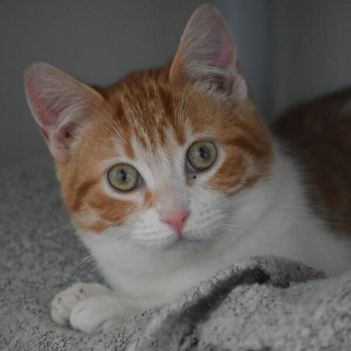
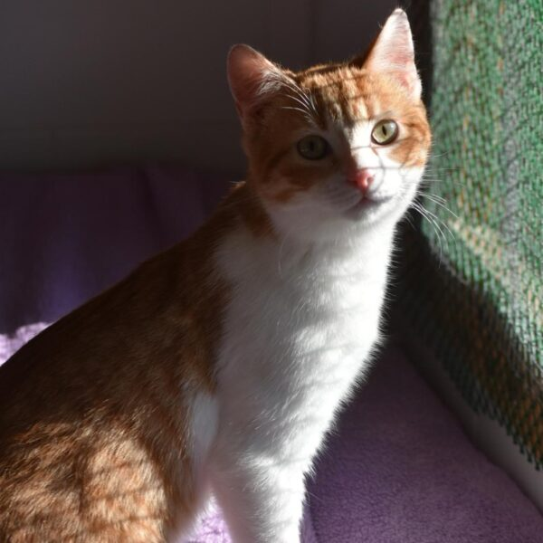

Ells també esperen



Quan encara era més nadó, va ser abandonat de la pitjor manera: tirat des d'una furgoneta. Encara que sembli increïble, aquestes coses encara passen… Per sort, Chimi va ser rescatat a temps i avui està fora de perill a la protectora.
Tot i el seu dur començament, Chimi és un gatet molt tendre, afectuós i juganer, encara que al principi es pot mostrar una mica tímid. Per la seva curta edat, seria ideal que fos adoptat per una família que ja tingui un altre gat, ja que tenir companyia felina l'ajudaria moltíssim a créixer segur i equilibrat.
Esperem que Chimi no hagi de seguir creixent a la protectora i que ben aviat trobi una família que ho vulgui i ho cuidi per sempre.